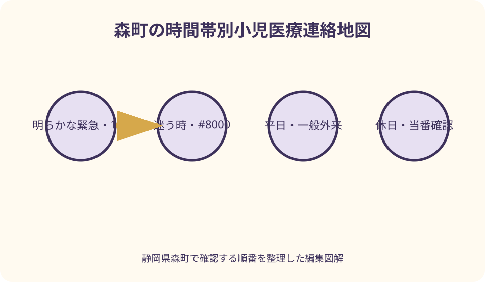
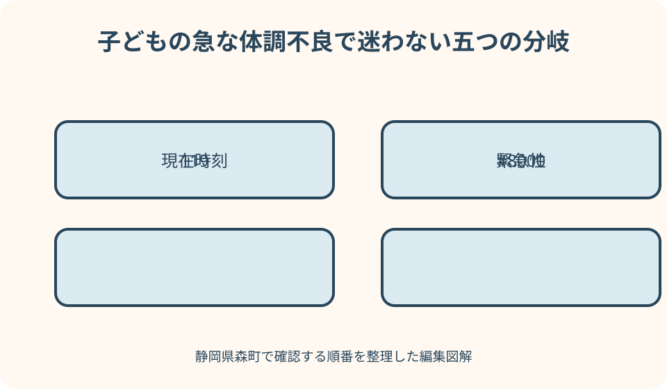

子育て・医療｜最終確認 2026-08-10
静岡県森町の小児科・夜間小児相談｜平日・休日・深夜・119の確認順
子どもの具合が悪いと、検索結果の最初に出た病院へすぐ向かいたくなります。しかし、平日の一般外来、休日当番、夜間相談、救急外来、119は役割が違います。公立森町病院は時間外受診前の電話連絡と深夜帯の受入制限を案内しており、直接来院すれば必ず診てもらえるわけではありません。本記事は診断や治療をするものではなく、森町・病院・静岡県・厚生労働省の公式情報から、その時刻にどこへ確認するかを整理するものです。

この記事は診断ではなく連絡順を決めるためのもの
同じ発熱や咳でも、年齢、経過、基礎疾患、その時の全身状態で医療者の判断は変わります。文章だけで病名、重症度、受診不要を決めることはできません。
ここで扱うのは、平日の日中、休日、夜間、深夜、明らかな緊急時を分け、それぞれ公式の確認先へつなぐ手順です。家庭での治療法や薬の量は示しません。
子どものそばにいる大人が一人なら、検索を続ける前に安全を確保し、電話をかけられる状態にします。運転中に相談せず、安全な場所へ停車するか別の大人へ依頼します。
公式ページも更新されます。この記事の時刻表を固定情報として保存せず、森町、公立森町病院、静岡県、医療情報ネットをその都度開き直します。
まず現在時刻と緊急性を分ける
最初に時計を見て、平日の通常診療時間内か、休日か、夜間かを確認します。曜日だけではなく祝日、年末年始、医療機関の臨時休診も関係します。
呼吸や反応など生命に関わる様子が明らかにおかしい、または保護者が緊急だと感じる場合は、受診先検索を続けず119へ連絡します。この記事で緊急性を否定しません。
緊急か迷う場合は、子どもの相談先として静岡県の #8000を使います。相談員へ年齢、症状、始まった時刻、今の様子、持病や服薬を短く伝えます。
平日だから一般外来、夜だから救急外来と自動で振り分けません。受診前に医療機関へ電話し、その時間に小児を診られるか、予約や入口の指示があるかを確認します。
119は最後の手段ではなく緊急時の連絡先
119は、相談窓口をすべて試した後にだけ使う番号ではありません。明らかに重症の場合は、森町の子育て公式ページも迷わず119を利用するよう案内しています。
通報時は場所、子どもの年齢、現在の様子、発生時刻を分かる範囲で伝えます。電話口の質問に答え、指示があれば従います。自分で病名を決めて説明する必要はありません。
住所が分かりにくい山間部や観光先では、施設名だけでなく現在地の住所、近くの目印、進入路を確認します。位置情報を共有できるよう端末の電池も確保します。
救急車を呼ぶべきか迷うこと自体はあり得ます。緊急性が明らかでない場面では #8000、年齢や内容に応じて #7119も公式案内を確認しますが、通話待ちで状態が悪化したと感じたら119へ切り替えます。

#8000は子どもの受診判断を相談する窓口
静岡こども救急電話相談 #8000は、子どもの急な発熱やけがなどで、受診すべきか迷うときに看護師や小児科医へ相談できる県の窓口です。現行公式案内では毎日二十四時間です。
プッシュ回線や携帯電話は局番なしの #8000、ダイヤル回線やIP電話には別の電話番号が案内されています。つながらない場合に備え、県公式ページの代替番号を紙にも控えます。
電話相談は診察ではありません。触診、検査、処方はできず、相談内容から受診の目安や確認先の助言を受ける仕組みです。『電話で大丈夫と言われた』という自己解釈で状態観察を止めません。
相談後に受診を案内されたら、指定された医療機関へ直接向かう前に電話し、受入、診療科、入口、持ち物を確認します。相談窓口と受診先は別の機関です。
#7119との違いを年齢と目的で確認する
静岡県の救急安心電話相談 #7119は、急な病気やけがで病院受診や救急車利用に迷うときの相談窓口です。県公式は、おおむね十五歳未満は #8000を利用するよう案内しています。
兄弟や保護者も同時に具合が悪い場合、誰について相談するかを最初に伝えます。子どもの相談と大人の相談を一つの説明に混ぜず、相談員の案内に従います。
#7119も医療行為ではなく、健康相談や薬の飲み方、セカンドオピニオンを扱う窓口ではありません。薬の疑問は処方元、薬局、医療機関の案内先へ確認します。
短縮番号がつながらない回線には県公式が別番号を示しています。番号を検索広告や非公式まとめから拾わず、静岡県公式ページを開いて確認します。
平日は一般外来を先に確認する
平日の診療時間内なら、検査や診療体制が整いやすい一般外来へ早めに相談します。公立森町病院も、休日・時間外を避けて診療時間内の受診を心がけるよう案内しています。
森町家庭医療クリニックは乳児から高齢者まで幅広く診療し、医療情報ネットには小児科が掲載されています。ただし受付時間、予約、担当、発熱時の入口は利用日に公式案内と電話で確認します。
公立森町病院には小児科がありますが、曜日や時間帯で担当が変わり、専門外来、健診、予防接種の枠も通常の病気受診とは別です。外来担当表だけで予約不要と判断しません。
かかりつけ医がある場合は、これまでの経過、処方、検査結果が伝わりやすい利点があります。受診できないときは、その医療機関の指示または医療情報ネットで別候補を探します。

休日は当番医と受入確認を分ける
森町公式は、磐周医師会・磐周歯科医師会が月ごとに救急当番医を定めると案内しています。当番は日付、診療科、時間を当月の公式情報で確認します。
当番医という表示があっても、小児の年齢や症状、混雑、設備により案内先が変わる場合があります。家を出る前に電話し、小児の受入可否を確認します。
休日診療は、平日のかかりつけ診療を置き換える定期外来ではありません。慢性症状、薬の継続、紹介状などは、相談先の指示に従い平日の診療へつなぎます。
休日の検索結果には前年や前月の当番表が混ざることがあります。ページの日付、発行元、対象地域を確認し、画面上の現在月と受診日を合わせます。
公立森町病院の時間外は必ず事前電話
公立森町病院の救急受診案内は、時間外受診を希望する場合に代表電話へ事前連絡するよう求めています。直接来院せず、氏名、生年月日、症状、来院方法、到着までの時間を伝えます。
電話をしたことは受入確約ではありません。時間帯や症状によって別の医療機関を案内される場合があり、診察順も来院順ではなく緊急度で判断されます。
現行案内では深夜帯の救急受診を原則制限し、直接来院しても受けられないと明記しています。深夜に不安がある場合もまず病院へ電話し、看護師の相談と指示を受けます。
この運用は将来変わり得ます。具体的な時間帯は利用日の病院公式『救急受診について』で確認し、古い広報紙や過去の受診経験を現在の受入条件にしません。
医療情報ネットは候補検索であって予約ではない
厚生労働省の医療情報ネットでは、場所、診療科、日時などの条件から医療機関候補を探せます。森町周辺の小児科を探すときは、市町名だけでなく現在地と移動範囲も確認します。
検索結果の診療時間は、臨時休診や受付終了を即時反映しない場合があります。サイト自身も登録情報が変更される可能性と事前確認の必要を示しています。
『現在診療中』の候補が表示されても、子どもの年齢、症状、初診、発熱対応、検査設備まで受入を保証しません。表示された電話へ連絡し、医療機関の指示を得ます。
候補が多すぎる場合は距離だけで決めず、診療科、時刻、交通手段で絞ります。緊急時に自家用車で遠くへ運ぶ判断を自分だけでせず、119や相談窓口の案内を優先します。
電話前に六項目を一枚へまとめる
電話前に、子どもの年齢と生年月日、体重、症状が始まった時刻、現在の様子、持病・アレルギー、使用中の薬を分かる範囲で書きます。測定値には測った時刻も添えます。
飲食や水分、排尿、睡眠などを尋ねられる場合があります。記憶を整えるための記録であり、その回数だけから家庭で重症度を決めるものではありません。
転倒や誤飲など出来事がある場合は、何が、いつ、どこで起きたかを伝えます。残っている容器や商品名は保管し、無理に吐かせるなど自己判断の処置をせず、専門窓口の指示を待ちます。
家族が交代で電話するなら、同じメモを使います。説明が変わったり、同じ薬を重ねて使ったりしないよう、誰が何時にどこへ相談したかも残します。
受診の持ち物と移動を先に整える
医療機関から来院の指示を受けたら、マイナンバーカードまたは保険証、各種受給者証、診察券、お薬手帳を用意します。公立森町病院もこれらを持ち物として案内しています。
乳幼児は着替え、おむつ、汚物袋、普段必要な物を最低限まとめます。待ち時間や感染対策の指示があるため、同伴人数を増やさず、医療機関の案内に従います。
夜間の運転が危険、保護者が動揺している、子どもから目を離せない場合は、自家用車で無理に向かいません。受診先や相談員へ移動方法を伝え、緊急なら119へ連絡します。
森町の山間部からは道路状況と移動時間が変わります。住所、目印、通行止めを確認し、ナビの最短経路だけで狭い道へ入らないようにします。
受診後と翌日の引継ぎを残す
受診後は、医療者から説明された観察点、次の受診時期、処方内容、連絡先をそのまま記録します。記憶で言い換えず、不明な点は帰る前に確認します。
夜間や休日の受診後に、平日のかかりつけ医へ情報共有するよう案内されたら、受診した施設名、日時、検査、処方が分かる資料を持参します。
兄弟、保育施設、学校へ伝える内容は、医療者の説明と施設の連絡規則に沿います。病名や登園・登校の可否を保護者が推測して断定しません。
個人の診療記録や受給者証の画像を家族共有チャットへ無制限に置きません。必要な家族だけが見られる方法を選び、不要になった画像の扱いも決めます。
家族の連絡カードを平時に作る
冷蔵庫や母子健康手帳の近くに、119、#8000、県公式の代替番号、かかりつけ医、公立森町病院、保護者の連絡先を書いたカードを置きます。
カードには番号だけでなく用途を書きます。緊急は119、子どもの急な症状で迷うときは #8000、医療機関候補は医療情報ネット、受診先は事前電話、と区別します。
祖父母や預かる人には、子どもの生年月日、アレルギー、服薬、受給者証の場所、保護者へ連絡できない時の順番を共有します。医療同意が必要な場面も想定して連絡可能にします。
半年ごと、または医療機関や電話番号が変わったときに更新します。古い外来担当表や休診日のメモは破棄し、更新日をカード右上へ書きます。
良い点
森町公式の子育てページは、重症時の119、#8000、医療情報ネット、町内医療機関、公立森町病院への導線を一か所にまとめています。最初の確認入口として使えます。
公立森町病院と森町家庭医療クリニックが近接し、病院には小児科、家庭医療クリニックには乳児からの幅広い診療案内があります。平日に相談先を持つ基盤になります。
静岡県の #8000は現行案内で毎日二十四時間、看護師や小児科医に相談できます。夜間や休日に一人で受診判断を抱え込まないための窓口です。
利点が成り立つのは、電話相談を診察と混同せず、受診先へ事前連絡する場合です。地域に医療機関があることは、全時間帯の小児受入を保証しません。
注文したい点
小児科の外来担当、休日当番、時間外救急、電話相談が別ページに分かれ、急いでいる保護者には違いが分かりにくい面があります。時刻から確認先へ進む一本の案内が望まれます。
医療情報ネットの候補表示は有用ですが、受入可否が確定したように見えない説明を目立たせる必要があります。検索後の電話確認を画面上でも強く促してほしいところです。
病院の時間外案内は運用変更の影響が大きいため、更新日、深夜制限、事前電話、対象年齢を簡潔に同じ画面で確認できると、過去情報との混同を減らせます。
保護者側も、便利な一覧を診断表として使わない姿勢が必要です。症状名の検索を続けて受診を遅らせず、迷いを公式相談先へ言葉で伝えます。
代案・結論
結論は、明らかな緊急時は119、子どもの急な症状で判断に迷うときは #8000、平日は一般外来、休日・時間外は当番と受入を電話確認、という順に分けることです。
公立森町病院へ時間外に向かう場合は、必ず先に病院へ電話します。深夜帯は現行の受入制限があるため、直接来院せず、電話で案内された受診先と移動方法に従います。
医療情報ネットで見つけた施設が受入不可なら、画面の次候補へ自動で走らず、#8000または案内元へ戻って相談します。子どもの状態が変われば、その変化を最初に伝えます。
今日できることは、緊急連絡カードを一枚作り、保険証類とお薬手帳の場所を家族で確認することです。具合が悪くなってから番号を探さない準備が、判断時間を守ります。
大石の視点
私は、森町で子育て世帯の住まいを考えるとき、病院までの直線距離だけで安心を表現すべきではないと考えます。診療時間、受入確認、夜間の移動手段までが生活条件です。
物件案内では、公立森町病院、家庭医療クリニック、森町病院前駅、主要道路を地図で確かめます。ただし『すぐ診てもらえる』とは言わず、公式の受診手順を一緒に案内します。
実家へ子どもを連れて帰省する家族なら、住所、夜間の進入路、電波、保険証類、かかりつけ医への連絡方法を実家カルテへ加えます。売却未定でも役立つ暮らしの記録です。
不動産業者が医療判断を代行することはできません。道路、交通、連絡先の確認を支え、公的な医療情報と個人の意見を混ぜないことが、小さな地域業者の誠実な役割です。
迷った時に読む一行メモ
緊急性が高いと感じたら119へ連絡し、相談番号を順番待ちしません。緊急か迷う子どもの症状は #8000へ相談します。
診療時間内はかかりつけ医や小児科へ早めに電話し、休日は当月の当番と小児受入を確認します。時間外の病院へは直接向かいません。
検索結果は候補であり、受診予約ではありません。医療情報ネットの表示先へ電話し、受けられないときは相談窓口へ戻ります。
この一行メモを家族全員が見られる場所へ置きます。子どもの状態が変わったら、以前の助言に固執せず、変化を伝えて連絡し直します。
公式情報・確認先
掲載内容は次の一次情報を基礎に整理しました。営業、料金、催し、交通は変わるため、出発前または手続き前にリンク先で最新情報を確認してください。
- 病気のとき（静岡県森町、2026-08-10確認）
- 病気になったとき（静岡県森町、2026-08-10確認）
- 救急受診について（公立森町病院、2026-08-10確認）
- 小児科（公立森町病院、2026-08-10確認）
- 森町家庭医療クリニックについて（公立森町病院、2026-08-10確認）
- 静岡こども救急電話相談（#8000番）（静岡県、2026-08-10確認）
- 救急安心電話相談窓口（#7119）（静岡県、2026-08-10確認）
- 静岡県森町の小児科一覧（厚生労働省 医療情報ネット、2026-08-10確認）